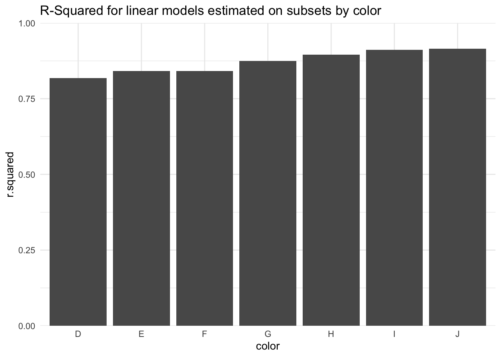

5 Iteration (or becoming an R Superhero)
6 Review
- The
tidyversecontains three packages that should handle almost all of your data import needs:readr- for plain text files (read_csv(),write_csv())readxl- for Excel files (read_excel())haven- for SAS, SPSS, and Stata data formats (read_dta(),read_sas(),write_dta())
- Don’t use
haven::write_sas()to try to create asas7bdatfile! - Tidy data
7 Motivation
- You want to apply a transformation to all variables in a data frame (or a subset of them).
- You want to summarize many variables, create many statistics for one variable, or some combination of the two.
- You want to read in many different .csv files.
8 Vectorization
There is less need to write code for control flow in R. First, everything is vectorized so there is rarely a need to iterate to manipulate a vector.
1:10 * 2 [1] 2 4 6 8 10 12 14 16 18 20diamonds %>%
select(carat, price) %>%
mutate(price_canadian = price * 1.31)# A tibble: 53,940 × 3
carat price price_canadian
<dbl> <int> <dbl>
1 0.23 326 427.
2 0.21 326 427.
3 0.23 327 428.
4 0.29 334 438.
5 0.31 335 439.
6 0.24 336 440.
7 0.24 336 440.
8 0.26 337 441.
9 0.22 337 441.
10 0.23 338 443.
# ℹ 53,930 more rows9 across()
On Day 2 we introduced a number of dplyr functions:
mutate(): to transform a variableselect(): to subset the columns of a data framefilter(): to subset the rows of a data framesummarise(): to calculate summary statisticsgroup_by(): to perform an operation by group
Sometimes we will want to apply these functions many times. For example, what if we want to manipulate many variables. For this, we will use the new across() function. To demonstrate across(), we’ll use the built-in mtcars data frame:
library(tidyverse)
mtcars <- as_tibble(mtcars)
head(mtcars)# A tibble: 6 × 11
mpg cyl disp hp drat wt qsec vs am gear carb
<dbl> <dbl> <dbl> <dbl> <dbl> <dbl> <dbl> <dbl> <dbl> <dbl> <dbl>
1 21 6 160 110 3.9 2.62 16.5 0 1 4 4
2 21 6 160 110 3.9 2.88 17.0 0 1 4 4
3 22.8 4 108 93 3.85 2.32 18.6 1 1 4 1
4 21.4 6 258 110 3.08 3.22 19.4 1 0 3 1
5 18.7 8 360 175 3.15 3.44 17.0 0 0 3 2
6 18.1 6 225 105 2.76 3.46 20.2 1 0 3 19.1 mutate()
Say we wanted to round all the variables of this data frame. We could write some very repetitive code:
mtcars %>%
mutate(
mpg = round(mpg),
cyl = round(cyl),
disp = round(disp),
hp = round(hp),
drat = round(drat),
wt = round(wt),
qsec = round(qsec),
vs = round(vs),
am = round(am),
gear = round(gear),
carb = round(carb)
)# A tibble: 32 × 11
mpg cyl disp hp drat wt qsec vs am gear carb
<dbl> <dbl> <dbl> <dbl> <dbl> <dbl> <dbl> <dbl> <dbl> <dbl> <dbl>
1 21 6 160 110 4 3 16 0 1 4 4
2 21 6 160 110 4 3 17 0 1 4 4
3 23 4 108 93 4 2 19 1 1 4 1
4 21 6 258 110 3 3 19 1 0 3 1
5 19 8 360 175 3 3 17 0 0 3 2
6 18 6 225 105 3 3 20 1 0 3 1
7 14 8 360 245 3 4 16 0 0 3 4
8 24 4 147 62 4 3 20 1 0 4 2
9 23 4 141 95 4 3 23 1 0 4 2
10 19 6 168 123 4 3 18 1 0 4 4
# ℹ 22 more rowsOr we can let across() do the work for us. All we have to do is pass the function we want applied to all columns of our data frame:
mtcars %>%
mutate(across(.cols = everything(), .fns = round))# A tibble: 32 × 11
mpg cyl disp hp drat wt qsec vs am gear carb
<dbl> <dbl> <dbl> <dbl> <dbl> <dbl> <dbl> <dbl> <dbl> <dbl> <dbl>
1 21 6 160 110 4 3 16 0 1 4 4
2 21 6 160 110 4 3 17 0 1 4 4
3 23 4 108 93 4 2 19 1 1 4 1
4 21 6 258 110 3 3 19 1 0 3 1
5 19 8 360 175 3 3 17 0 0 3 2
6 18 6 225 105 3 3 20 1 0 3 1
7 14 8 360 245 3 4 16 0 0 3 4
8 24 4 147 62 4 3 20 1 0 4 2
9 23 4 141 95 4 3 23 1 0 4 2
10 19 6 168 123 4 3 18 1 0 4 4
# ℹ 22 more rowsTo supply your own expression, we can write our own function and pass it through to across():
divide_by_ten <- function(x) {
new_x <- x / 10
return(new_x)
}
mtcars %>%
mutate(across(.cols = everything(), .fns = divide_by_ten))# A tibble: 32 × 11
mpg cyl disp hp drat wt qsec vs am gear carb
<dbl> <dbl> <dbl> <dbl> <dbl> <dbl> <dbl> <dbl> <dbl> <dbl> <dbl>
1 2.1 0.6 16 11 0.39 0.262 1.65 0 0.1 0.4 0.4
2 2.1 0.6 16 11 0.39 0.288 1.70 0 0.1 0.4 0.4
3 2.28 0.4 10.8 9.3 0.385 0.232 1.86 0.1 0.1 0.4 0.1
4 2.14 0.6 25.8 11 0.308 0.322 1.94 0.1 0 0.3 0.1
5 1.87 0.8 36 17.5 0.315 0.344 1.70 0 0 0.3 0.2
6 1.81 0.6 22.5 10.5 0.276 0.346 2.02 0.1 0 0.3 0.1
7 1.43 0.8 36 24.5 0.321 0.357 1.58 0 0 0.3 0.4
8 2.44 0.4 14.7 6.2 0.369 0.319 2 0.1 0 0.4 0.2
9 2.28 0.4 14.1 9.5 0.392 0.315 2.29 0.1 0 0.4 0.2
10 1.92 0.6 16.8 12.3 0.392 0.344 1.83 0.1 0 0.4 0.4
# ℹ 22 more rowsOr we can write it inline using the following syntax where ~ lets dplyr know to expect an inline function, and . is used as a placeholder for the variable.
mtcars %>%
mutate(across(.cols = everything(), .fns = ~ . / 10))# A tibble: 32 × 11
mpg cyl disp hp drat wt qsec vs am gear carb
<dbl> <dbl> <dbl> <dbl> <dbl> <dbl> <dbl> <dbl> <dbl> <dbl> <dbl>
1 2.1 0.6 16 11 0.39 0.262 1.65 0 0.1 0.4 0.4
2 2.1 0.6 16 11 0.39 0.288 1.70 0 0.1 0.4 0.4
3 2.28 0.4 10.8 9.3 0.385 0.232 1.86 0.1 0.1 0.4 0.1
4 2.14 0.6 25.8 11 0.308 0.322 1.94 0.1 0 0.3 0.1
5 1.87 0.8 36 17.5 0.315 0.344 1.70 0 0 0.3 0.2
6 1.81 0.6 22.5 10.5 0.276 0.346 2.02 0.1 0 0.3 0.1
7 1.43 0.8 36 24.5 0.321 0.357 1.58 0 0 0.3 0.4
8 2.44 0.4 14.7 6.2 0.369 0.319 2 0.1 0 0.4 0.2
9 2.28 0.4 14.1 9.5 0.392 0.315 2.29 0.1 0 0.4 0.2
10 1.92 0.6 16.8 12.3 0.392 0.344 1.83 0.1 0 0.4 0.4
# ℹ 22 more rows9.2 summarize()
Say we wanted to find the mean of every variable in the mtcars data. In this case we can still use across()!
mtcars %>%
summarize(across(.cols = everything(), .fns = mean))# A tibble: 1 × 11
mpg cyl disp hp drat wt qsec vs am gear carb
<dbl> <dbl> <dbl> <dbl> <dbl> <dbl> <dbl> <dbl> <dbl> <dbl> <dbl>
1 20.1 6.19 231. 147. 3.60 3.22 17.8 0.438 0.406 3.69 2.81We can calculate multiple summary statistics by passing in a list() of the statistics we want:
mtcars %>%
summarize(
n = n(),
across(
.cols = everything(),
.fns = list(mean = mean, median = median)
)
)# A tibble: 1 × 25
n mpg_mean mpg_median cyl_mean cyl_median disp_mean disp_median hp_mean
<int> <dbl> <dbl> <dbl> <dbl> <dbl> <dbl> <dbl>
1 32 20.1 19.2 6.19 6 231. 196. 147.
# ℹ 17 more variables: hp_median <dbl>, drat_mean <dbl>, drat_median <dbl>,
# wt_mean <dbl>, wt_median <dbl>, qsec_mean <dbl>, qsec_median <dbl>,
# vs_mean <dbl>, vs_median <dbl>, am_mean <dbl>, am_median <dbl>,
# gear_mean <dbl>, gear_median <dbl>, carb_mean <dbl>, carb_median <dbl>,
# n_mean <dbl>, n_median <int>9.3 Exercise 1
Step 1: Open up a script, save it with a meaningful name, and load the tidyverse.
Step 2: Use the mutate() and across() to take the log of each variable in mtcars.
Step 3: Use the summarise() and across() to find the standard deviation (sd) of each variable in mtcars.
10 where()
10.1 Example
To demonstrate where() we’ll use the diamonds data frame from ggplot2:
head(diamonds)# A tibble: 6 × 10
carat cut color clarity depth table price x y z
<dbl> <ord> <ord> <ord> <dbl> <dbl> <int> <dbl> <dbl> <dbl>
1 0.23 Ideal E SI2 61.5 55 326 3.95 3.98 2.43
2 0.21 Premium E SI1 59.8 61 326 3.89 3.84 2.31
3 0.23 Good E VS1 56.9 65 327 4.05 4.07 2.31
4 0.29 Premium I VS2 62.4 58 334 4.2 4.23 2.63
5 0.31 Good J SI2 63.3 58 335 4.34 4.35 2.75
6 0.24 Very Good J VVS2 62.8 57 336 3.94 3.96 2.48What happens if we try to use mutate(acoss(.cols = everything(), .fns = log)) to log transform each variable in this data frame?
diamonds %>%
mutate(across(.cols = everything(), .fns = log))Error in `mutate()`:
ℹ In argument: `across(.cols = everything(), .fns = log)`.
Caused by error in `across()`:
! Can't compute column `cut`.
Caused by error in `Math.factor()`:
! 'log' not meaningful for factorsIt doesn’t work because diamonds has some non-numeric columns. We could find all the columns that are numeric:
glimpse(diamonds)Rows: 53,940
Columns: 10
$ carat <dbl> 0.23, 0.21, 0.23, 0.29, 0.31, 0.24, 0.24, 0.26, 0.22, 0.23, 0.…
$ cut <ord> Ideal, Premium, Good, Premium, Good, Very Good, Very Good, Ver…
$ color <ord> E, E, E, I, J, J, I, H, E, H, J, J, F, J, E, E, I, J, J, J, I,…
$ clarity <ord> SI2, SI1, VS1, VS2, SI2, VVS2, VVS1, SI1, VS2, VS1, SI1, VS1, …
$ depth <dbl> 61.5, 59.8, 56.9, 62.4, 63.3, 62.8, 62.3, 61.9, 65.1, 59.4, 64…
$ table <dbl> 55, 61, 65, 58, 58, 57, 57, 55, 61, 61, 55, 56, 61, 54, 62, 58…
$ price <int> 326, 326, 327, 334, 335, 336, 336, 337, 337, 338, 339, 340, 34…
$ x <dbl> 3.95, 3.89, 4.05, 4.20, 4.34, 3.94, 3.95, 4.07, 3.87, 4.00, 4.…
$ y <dbl> 3.98, 3.84, 4.07, 4.23, 4.35, 3.96, 3.98, 4.11, 3.78, 4.05, 4.…
$ z <dbl> 2.43, 2.31, 2.31, 2.63, 2.75, 2.48, 2.47, 2.53, 2.49, 2.39, 2.…And then write a lot of repetitive mutate() statements again. Instead let’s use where() as follows:
diamonds %>%
mutate(across(.cols = where(is.numeric), .fns = log))# A tibble: 53,940 × 10
carat cut color clarity depth table price x y z
<dbl> <ord> <ord> <ord> <dbl> <dbl> <dbl> <dbl> <dbl> <dbl>
1 -1.47 Ideal E SI2 4.12 4.01 5.79 1.37 1.38 0.888
2 -1.56 Premium E SI1 4.09 4.11 5.79 1.36 1.35 0.837
3 -1.47 Good E VS1 4.04 4.17 5.79 1.40 1.40 0.837
4 -1.24 Premium I VS2 4.13 4.06 5.81 1.44 1.44 0.967
5 -1.17 Good J SI2 4.15 4.06 5.81 1.47 1.47 1.01
6 -1.43 Very Good J VVS2 4.14 4.04 5.82 1.37 1.38 0.908
7 -1.43 Very Good I VVS1 4.13 4.04 5.82 1.37 1.38 0.904
8 -1.35 Very Good H SI1 4.13 4.01 5.82 1.40 1.41 0.928
9 -1.51 Fair E VS2 4.18 4.11 5.82 1.35 1.33 0.912
10 -1.47 Very Good H VS1 4.08 4.11 5.82 1.39 1.40 0.871
# ℹ 53,930 more rowsWhen using the where() with across(), we first supply the condition that must be met, and then the function to apply to the columns that meet that condition. So in the above example, we first test if a column is.numeric, and then apply log to those that are.
We can use select() and where() to subset only those columns that are numeric:
diamonds %>%
select(where(is.numeric))# A tibble: 53,940 × 7
carat depth table price x y z
<dbl> <dbl> <dbl> <int> <dbl> <dbl> <dbl>
1 0.23 61.5 55 326 3.95 3.98 2.43
2 0.21 59.8 61 326 3.89 3.84 2.31
3 0.23 56.9 65 327 4.05 4.07 2.31
4 0.29 62.4 58 334 4.2 4.23 2.63
5 0.31 63.3 58 335 4.34 4.35 2.75
6 0.24 62.8 57 336 3.94 3.96 2.48
7 0.24 62.3 57 336 3.95 3.98 2.47
8 0.26 61.9 55 337 4.07 4.11 2.53
9 0.22 65.1 61 337 3.87 3.78 2.49
10 0.23 59.4 61 338 4 4.05 2.39
# ℹ 53,930 more rows10.2 Exercise 2
Note: Each step is a separate task. They need not be piped together.
Step 1: Use select() and where() to subset all the columns from diamonds that are factor variables.
Step 2: Use the mutate(), across(), and where() to take the sqrt of each numeric variable in diamonds.
Step 3: Use the summarise, across(), and where() to find the mean and standard deviation of each numeric variable in diamonds.
Step 4: Use summarise() and across() to find the mean and standard deviation of each numeric variable in diamonds, first using group_by(), across(), and where() to group by all factor variables.
11 Selector Helpers
Sometimes we want to use across() with many variables but not all variables or not all variables of a certain type. We can use a character vector to pick a subset of columns.
diamonds %>%
mutate(across(.cols = c("x", "y", "z"), .fns = log))# A tibble: 53,940 × 10
carat cut color clarity depth table price x y z
<dbl> <ord> <ord> <ord> <dbl> <dbl> <int> <dbl> <dbl> <dbl>
1 0.23 Ideal E SI2 61.5 55 326 1.37 1.38 0.888
2 0.21 Premium E SI1 59.8 61 326 1.36 1.35 0.837
3 0.23 Good E VS1 56.9 65 327 1.40 1.40 0.837
4 0.29 Premium I VS2 62.4 58 334 1.44 1.44 0.967
5 0.31 Good J SI2 63.3 58 335 1.47 1.47 1.01
6 0.24 Very Good J VVS2 62.8 57 336 1.37 1.38 0.908
7 0.24 Very Good I VVS1 62.3 57 336 1.37 1.38 0.904
8 0.26 Very Good H SI1 61.9 55 337 1.40 1.41 0.928
9 0.22 Fair E VS2 65.1 61 337 1.35 1.33 0.912
10 0.23 Very Good H VS1 59.4 61 338 1.39 1.40 0.871
# ℹ 53,930 more rowsSometimes this is cumbersome. Fortunately, library(dplyr) has helpers that can create character vectors for use. For instance, if all of the variables we care about start with “e”, then we can
data %>%
mutate(across(.cols = starts_with("e"), .fns = log))
There are several selector helpers:
contains()ends_with()matches()num_range()one_of()starts_with()
12 pivot_*
Warning: across() is not an excuse to avoid tidy data! For example, the following is bad. Why does this violate tidy data? How much pain would we experience if we wanted to plot this data?
data <- tribble(
~state, ~`1999`, ~`2000`, ~`2001`,
"Maryland", 100, 110, 121,
"Virginia", 205, 204, 203
)We use pivot_longer() to transform data from wide to long and pivot_wider() to transform data from long to wide.
We can fix the above data with pivot_longer()
data_long <- data %>%
pivot_longer(
cols = -state,
names_to = "year",
values_to = "widget_factories"
)
data_long# A tibble: 6 × 3
state year widget_factories
<chr> <chr> <dbl>
1 Maryland 1999 100
2 Maryland 2000 110
3 Maryland 2001 121
4 Virginia 1999 205
5 Virginia 2000 204
6 Virginia 2001 203We can unfix the data with pivot_wider()
data_long %>%
pivot_wider(
id_cols = state,
names_from = year,
values_from = widget_factories
)# A tibble: 2 × 4
state `1999` `2000` `2001`
<chr> <dbl> <dbl> <dbl>
1 Maryland 100 110 121
2 Virginia 205 204 20312.1 Tidy data
Happy families are all alike; every unhappy family is unhappy in its own way. ~ Leo Tolstoy
tidy datasets are all alike but every messy dataset is messy in its own way ~ Hadley Wickham
Tools optimized for one data format are going to be more powerful than tools optimized for any data format. If we can standardize our data, then we will have really powerful tools.
Unfortunately, most people do not pay enough attention to the structure, storage, and dissemination of data.
13 library(purrr)
Sometimes, we’re going to want to iterate on a data structure other than a tibble or iterate a function that isn’t vectorized.
13.1 Many files
One approach is to use for loops. For loops are useful and should be understood. This code writes nine .csv files with 1000 random draws from a standard normal distribution.
dir.create("data")
for (i in 1:9) {
tibble(
id = 1:1000,
value = rnorm(1000)
) %>%
write_csv(path = paste0("data/data", i, ".csv"))
}library(purrr) is a powerful alternative to for loops that is designed for functional programming. This code reads in the nine .csv files!
files <- list.files(path = "data", full.names = TRUE)
map(.x = files, .f = read_csv)map() always returns a list! map_*() functions can be used to return different data structures. For instance, map_chr() will always return a character vector. map_df() is like the code above but returns one data frame instead of a list of smaller data frames.
map_df(.x = files, .f = read_csv)13.2 Many models
library(broom)
# estimate a linear model for each of seven colors
many_models <- diamonds %>%
split(diamonds$color) %>%
map(~ lm(formula = price ~ carat + cut, data = .))
# extract model diagnostics from each model
many_models_results <- bind_cols(
color = names(many_models),
map_df(many_models, glance)
)
# plot
many_models_results %>%
ggplot(aes(color, r.squared)) +
geom_col() +
scale_y_continuous(
expand = c(0, 0),
limits = c(0, 1)
) +
labs(title = "R-Squared for linear models estimated on subsets by color") +
theme_minimal()
These examples are beyond the scope of an introductory class but I wanted to demonstrate the power of iteration in R. These tools can be used iterate data visualizations, R Markdown reports, statistical models, computer operations like file creation and transfer, and more.